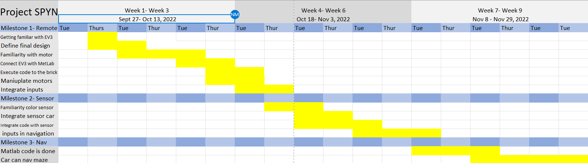

Description of Project
The requirements for this project were to create a car which could solve the maze autonomously without user control unless it was on the green and blue areas, where the user had control of the car which surved the purpose of a taxi. The car picked a miniature inch by inch cardbord wheelchaired man on blue and dropped off the cardboard wheelchair man on the green without harming the man. Additionally the car should start on yellow and stop on the red stop signs indicated with red tape on the ground.
Car Design
We created the design of the car with the goals to maximize the car's compactness and sturdieness while fitting all of the motors and the sensors which connected to the EV3 brick. Throughout the testing phase of the process, the car encountered multiple issues with getting stuck at certain parts of the maze such as the corners where a pertruding sensor catch the edge of the wall and move the car in an incorrect direciton. Additionally, because of the way the bumper sensor on the front of the car could hit the wall on its edge and hault the car without even registering the press, the car could get stuck even with a slight misalignement of direction. To solve both of these issues, our team added small wheels with an axis perpendicular to the ground on both the left and right sides not only so that the car wouldn't get stuck on the corners, but also so the robot's bumper sensor would always activate when heading towards a wall even with a large misalignment.
Programming
Our solution to solving the maze was to have the car hug the right wall until arriving at a portion requiring user control. The car used the inputs from ultrasonic sensor to determine when it should turn right, the bumper sensor on the front to determine when it should turn left, and the color sensor to determine when it should switch over to user control. We faced issues with the code through inconsistancies such as the car not turning exactly ninty degrees due to the way the MATLAB language funcitoned. We fixed this issue through redesigning the car itself so that it would account for the inperecise turnes along with changing the code so that the car would not enter an infinite loop, rendering it stuck, while traversing through the maze.
Video
This video shows the robot solving the maze in the testing stage of development.
Gnatt Chart
Progress
Conclusion
I learned many skills through the creation of the project such as debugging code and trouble shooting issues along with designing a robot. Beyond those skills, I gained experience in many soft skills such as teamwork and communication. Although our team faced many issues during the development stage requiring us to redesign the car after it accidentally fell from a table, we were able to successfully create an autonomous car that can solve a maze.